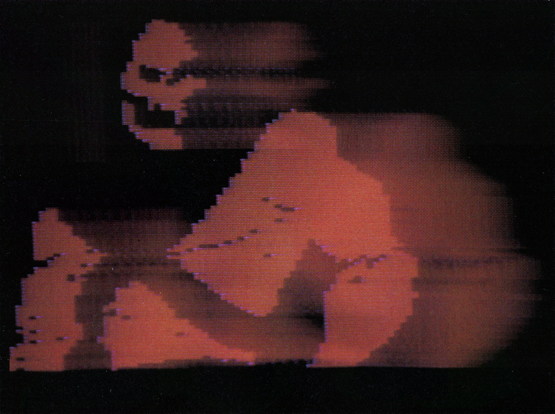

Trickfilme mit dem C 64
Bildschirmfüllende Trickfilme flitzen mit einer Geschwindigkeit über den Bildschirm, daß man fast meint vor einem Fernseher zu sitzen. Mit 14 Bildern pro Sekunde sind die Filme nahezu flimmerfrei. Ein komfortabler Editor und die Möglichkeit, Sequenzen zu schneiden und zu mischen, runden das Programm ab.

Wieder hat eine neue Idee die Fähigkeiten des C 64 unter Beweis gestellt. Die Umrechnung einer Hires-Grafik in Blockgrafik und das anschließende Aneinanderfügen der Bilder zu einem Film ist schon eine kleine Sensation. Die Trickfilme aus dem C 64 müssen Sie einfach gesehen haben!
Die bisher üblichen Lösungen basierten darauf, nur kleine Bildschirmausschnitte von einem Viertel der Gesamtgröße schnell nacheinander abzuspielen oder gar in die Vektorgrafik überzugehen. Beide Möglichkeiten waren entweder extrem speicherintensiv oder, je nach Anzahl der zu zeichnenden Linien, zu langsam. Konvertiert man dagegen die Hires-Bilder in den Blockzeichensatz des Textbildschirms, also 25x40 Zeichen, sind so schon 61 Bilder im C 64 unterzubringen. Im normalen Zeichensatz entspricht dies einer Auflösung von 50x80, bei geändertem Zeichensatz 100x80 Punkten. Gegenüber den 64000 Punkten der hochauflösenden Grafik besteht ein Bild nun nur noch aus 1000, beziehungsweise 2000 Punkten. Bei Hires sind dabei 8 KByte belegt, bei Lores nur jeweils 1 KByte. Durch die extrem kurzen Programmteile bleibt für die niedrig aufgelösten Grafiken 61 KByte Speicherplatz frei. Der für die 100x80-Grafiken nötige Zeichensatz verringert natürlich den freien Platz auf etwa 53 KByte.
Die Abspielgeschwindigkeit der Filme erreicht über die Hälfte der üblichen Filmgeschwindigkeit: Da pro Grafik nur 1000 Bytes zu übertragen sind, sind bis zu 14 Bilder pro Sekunde möglich. Der erzeugte Bewegungseffekt ist von einem normalen Film mit 24 Bildern pro Sekunde kaum noch zu unterscheiden.
Eigentlich sind es ja zwei Programme, da für die beiden Auflösungen einige Programmteile abgeändert wurden. Der gravierendste Unterschied besteht im geänderten Zeichensatz in der 100x80-Auflösung und im Editor, der beliebige Sequenzen (Cuts) schneidet und mischt.
Natürlich braucht man zum Konvertieren eine entsprechende Hires-Vorlage. Eine Möglichkeit, an fortlaufende Hires-Grafiken zu kommen, besteht im Digitalisieren von Filmausschnitten. Diese konvertiert man dann einfach, und schon steht der fertige Trickfilm bereit. Die Farbwerte der Hires-Bilder werden bei der Umrechnung in das Lores-Format berücksichtigt und entsprechend umgerechnet. Dazu stehen genügend Hilfsmittel zur Nachbearbeitung der Bilder bereit. Für die Auflösung 100x80 stehen ausführliche Editiermöglichkeiten zu Verfügung. Zum Beispiel lassen sich beliebige Sequenzen, sogenannte Cuts, herausschneiden und beliebig aneinanderreihen, um sie vor- und rückwärts abzuspielen.
Da die Filme auf Diskette bis zu 245 Blöcke lang sind, sorgt ein Schnellader für eine erträgliche Ladezeit. Die knapp 60 KByte füllen in etwa 30 Sekunden den Speicher des C 64. Dies entspricht der fünffachen Ladegeschwindigkeit des normalen Betriebssystems.
Das Programm selbst besteht aus mehreren Teilen, Basic und Maschinensprache gemischt. Alle zeitkritischen Teile sind in Maschinensprache gehalten. Lediglich Eingaben, Lade- und Steuerprogramme sind in Basic geschrieben. Die Programmteile sind insgesamt möglichst kurz und in Overlay-Technik programmiert, damit Platz für möglichst viele Bilder bleibt.
(og)Trickfilme mit dem C 64
Dia-Shows und Trickfilme, die mit einer Auflösung bis 100x80 Punkten über den Bildschirm flattern, sind das Ergebnis des Trickfilmgenerators. Grafiken aus der Hires-Bitmap, konvertiert in die niedrigere Auflösung des Textbildschirms, gestatten bis zu 63 Bilder gleichzeitig im Speicher des C 64.
Schnelles Abspielen von Filmen ist in der normalen Hires-Auflösung von 320x200 Punkten kaum möglich, da in diesem Format keine zehn Bilder in den C 64 passen. Konvertiert man dagegen die Hires-Bilder in den Blockzeichensatz des Textbildschirms, also 25x40 Zeichen, sind so schon 61 Bilder im C 64 unterzubringen. Im normalen Zeichensatz entspricht dies einer Auflösung von 50x80, bei geändertem Zeichensatz 100x80 Punkten. Auch die Abspielgeschwindigkeit kann sich sehen lassen: bis zu 14 Bilder pro Sekunde sind möglich.
Die zu verarbeitenden Bilder sollten das Koala-Format einhalten, das ist jedoch nicht zwingend. Zudem können Sie den Konverter aus Sonderheft 6/86 hernehmen, um Farbbilder ins Koala-Format zu bringen.
Eine Möglichkeit, um an fortlaufende Hires-Grafiken zu kommen, besteht natürlich im Digitalisieren von Filmausschnitten. Auf der Programmservice-Diskette befindet sich für jede Auflösung ein Beispiel-Film.
Die einzelnen Grafiken können Sie auch editieren, in der 100x80-Auflösung besteht die Möglichkeit, die Sequenzen herauszuschneiden, diese beliebig aneinanderzureihen und vor- oder rückwärts abzuspielen.
Programmbeschreibung und Abtipphinweise:
Das Programm besteht aus mehreren Teilen, von denen sich immer nur die gerade benötigten im Computer befinden. Für beide Auflösungen sind insgesamt 26 Programme (inklusive Ladeprogramme) erforderlich.
Die Listings 1 bis 14 geben Sie bitte mit dem Checksummer ein und speichern diese auf Diskette. Dann tippen Sie die Listings 15 bis 26 mit dem MSE ab und speichern sie auf die gleiche Diskette.
Listing Nummer 14 »ZSATZ-GENERATOR« nimmt eine Sonderstellung ein. Es generiert den Zeichensatz für die 100x80-Auflösung. Starten Sie Listing 14 als erstes. Der Generator schreibt selbständig den neuen Zeichensatz auf die Diskette. Danach können Sie den Generator auf eine andere Diskette sichern und auf der Trickfilmdiskette löschen. Er wird danach nicht mehr benötigt. Auf der Programmservice-Diskette ist deshalb nur der Zeichensatz und nicht das Generator-Programm enthalten.
1. Bilder erstellen.
Laden Sie zuerst das Programm »PIXLER« und starten Sie es mit RUN. Daraufhin wird das Maschinenprogramm »MPPIXLER« nachgeladen.
Zuerst fragt das Programm, ob ein Bild geladen werden soll. Das sollte man tun, wenn es der erste Aufruf ist, oder kein Bild im Speicher ab $A000 liegt. Danach sieht man die Grafik, wie sie im Speicher liegt. Auf Tastendruck sucht der Pixler die dazugehörenden Farben, entsprechend der Koala-Bilder. Durch Eingabe von <N> wird kein Bild geladen, mit <A> (wie Ausstieg) kann das Programm abgebrochen werden.
Nun wird man gefragt, ob man die vom Computer gewählten Farben übernehmen will. Die Vorder- und Hintergrundfarbe kann gewählt werden.
Als nächstes ist der Kontrast an der Reihe. Eine 8 ist als Mittelwert vorgegeben. Doch es gibt von Bild zu Bild sehr große Abweichungen. Experimentieren ist hier angebracht.
Im nächsten Schritt kann das Bild gespeichert werden; am besten auf einer extra Bilder-Diskette. Der Filename ist frei wählbar. Wird dem Filenamen ein Punkt ».« angehängt, werden die Farben ebenfalls gespeichert. Wissen Sie noch nicht, wie die Grafik aussieht, und wollen auch noch nicht speichern, dann ist die Frage mit <RETURN> zu übergehen.
Mit <SPACE> kann zwischen der Hires-Darstellung und dem konvertierten Bild umgeschaltet werden. Jede andere Taste führt an den Anfang zurück.
Analog verläuft das Ganze, wenn mit der höheren Auflösung 100x80 gearbeitet wird. Unterschiede bestehen nur im zu ladenden Programm »SUPERPIXLER« und in der Voreinstellung des Kontrastes, der hier bei 4 liegt.
2. Bilder drucken:
(dieses Programm ist nur bei der geringeren Auflösung verfügbar)
Dazu laden Sie das File »DRUCKEN« von der Diskette und starten es. Sie werden nun aufgefordert, die Diskette mit Ihrem auszudruckenden Bild einzulegen und dessen Namen einzugeben. Außerdem wird noch gefragt, ob das Bild invertiert zu drucken ist. Das sollten Sie immer machen, wenn das Bild mit einer dunkleren Hintergrund- als Vordergrundfarbe gespeichert wurde. Dann startet der Druckvorgang.
3. Film erstellen:
Dazu laden Sie das File »FILM MAKER« von Diskette und geben LIST100- ein. In dieser DATA-Zeile müssen die Bildnamen, die zu einem Film zusammengehängt werden sollen, stehen. Wenn eine Zeile nicht reicht, können natürlich alle höheren Zeilennummern für weitere DATA-Zeilen verwendet werden. Als letzter Name ist ein »*« einzugeben. Es sind bis zu 61 Bilder erlaubt, bei der hohen Auflösung bis zu 53 Bilder.
Nach Eingabe von RUN fordert das Programm dazu auf, die Diskette mit den Bildern einzulegen. Nach Drücken der <RETURN>-Taste startet das Verketten. Danach muß die Trickfilm-Diskette eingelegt und nochmals <RETURN> gedrückt werden. Nach kurzem Nachladen wird nach dem Filmnamen gefragt, unter dem der Film auf Diskette gespeichert werden soll. Da das Programm hier wieder auf die <RETURN>-Taste »wartet«, kann eine spezielle »Film-Diskette« eingelegt werden. Sehr wichtig ist allerdings, daß auf der Diskette noch genügend freier Platz vorhanden ist. Für jedes Bild sind vier Blöcke zu berücksichtigen. Nach <RETURN> wird der Film gespeichert.
Nun muß nur noch das File »MPVIEWER« auf der Filmdiskette gespeichert werden.
4. Film ansehen:
Laden und starten Sie das Programm »SEE FILM«.
Das Programm lädt kurz nach und fragt nach dem Filmnamen. Jetzt muß die Film-Diskette eingelegt und der Filmname angegeben werden.
Der Film, der bis zu 245 Blöcke lang sein kann, wird mit Hilfe einer Schnelladeroutine mit 5facher Normalgeschwindigkeit in den Speicher geladen. Danach muß wieder die Trickfilm-Diskette eingelegt und <F1> gedrückt werden. Nach kurzem Nachladen wird nach Hintergrund- und Punktfarbe gefragt. Falls Sie sich in der höheren Auflösung befinden, lesen Sie unter Editor weiter.
Nun wird nach der Endadresse gefragt. Sie ergibt sich aus der Anzahl der Bilder mal 1000. Die wirkliche Endadresse wird vorgegeben. Dann startet der Film. Die Geschwindigkeit kann mit <CRSR>-rechts und <CRSR>-unten gesteuert werden. Zum Abbrechen dient <RUN/STOP>. Mit RUN wird erneut gestartet und neue Parameter können gewählt werden.
Editor
Bei der höheren Auflösung haben Sie jetzt einen Editor vor sich. Er enthält einige Menüpunkte, die sich von selbst erklären. Interessant ist der Punkt 4, »Sequenzen schneiden«. Zuerst können Cuts genommen werden. Es wird nach Anfangs- und Endbild gefragt (0 bis höchstens 53). Fehleingaben werden abgefangen. Danach wird die Sequenz durchgespielt. Es wird bei jedem Bild auf eine Taste gewartet, um eine genaue Einstellung zu ermöglichen. Am besten hält man <SPACE> gedrückt. Schließlich kommt die Abfrage, ob der Cut okay ist. Wenn nicht, kann er nochmals eingegeben werden. Falls keine Cuts mehr erstellt werden sollen, muß -1 eingegeben werden.
Jetzt wird nach der voraussichtlichen Anzahl der Sequenzen gefragt. Tippen Sie lieber zu viel als zu wenig ein. Dann können die Sequenzen mit Cuts belegt werden. Dazu fragt der Computer nach der Cut-Nummer (0 bis Anzahl der Cuts). Fehleingaben werden wieder abgefangen. Danach muß noch angegeben werden, ob der Cut vor- oder rückwärts gespielt werden soll: »0« für vor- oder »1« für rückwärts.
Soll der Menüpunkt abgebrochen werden, bevor alle Sequenzen belegt sind, muß als Cut-Nummer nur -1 eingegeben werden. Nach der Anzeige der Anzahl der Sequenzen befinden Sie sich dann wieder im Hauptmenü und können Ihre Sequenz mit Punkt 5 ansehen. Des weiteren ist Laden und Speichern, jeweils mit Angabe des File-Namens, erlaubt. Aus einem laufenden Film kommt man mit <RETURN> heraus.
5. Dia-Show:
Wenn Sie Ihren Gästen eine Dia-Vorführung präsentieren wollen, dann ist dieses Programm bestens geeignet. Laden Sie das Programm »DIA VIEWER« und geben »LIST 100-« ein. Dann verfährt man wie beim Film, und gibt die Bilder, die zu einer Dia-Show zusammengefügt werden sollen, ein. Als letzter Name muß immer ein »*« stehen. Das Programm wird wieder mit RUN gestartet. Daraufhin wird nach Vordergrund- und Hintergrundfarbe (0 bis 15) und ob Farbbilder gewünscht werden gefragt. Die Farb-Files müssen sich natürlich auf derselben Diskette befinden und sind durch einen angehängten ».« zu erkennen. Nach dem Einlegen der Diadiskette startet man mit <RETURN>. Nach kurzer Zeit beginnt die Show. Nach jedem Bild drücken Sie eine Taste zum Weitermachen.
6. Editor
Er wird wie gewohnt mit LOAD "EDITOR",8 geladen und mit RUN gestartet. Er lädt das Hauptprogramm nach. Der Editor enthält Menüpunkte zum Laden, Speichern, Editieren und Einfärben der Bilder. Das Editieren entfällt bei der höheren Auflösung.
Beim Laden und Speichern wird gefragt, ob Sie das mit oder ohne Farbe tun wollen. Wenn Sie ein Bild ohne Farbe haben, wird gefragt, ob die Farbe im Speicher zu übernehmen ist. Das ist nur sinnvoll, wenn zuerst ein Farbbild im Speicher war.
Die Editierfunktionen: Gesteuert wird ein blinkender Cursor mit dem Joystick im Control-Port 2. Mit <F1> und <F5> können Vorder- und Hintergrundfarbe geändert werden. Im Neutralmodus ist der Rahmen schwarz. Durch Druck auf den Feuerknopf wechselt er seine Farbe von Weiß über Rot nach Schwarz. Ist der Rahmen weiß, werden die unter dem Cursor liegenden Punkte gesetzt, ist er rot, werden sie gelöscht. Verlassen wird der Editmodus mit der <RETURN>-Taste. Im Färbemodus wird wieder mit dem Joystick gesteuert. Mit Feuer wird zwischen Färben und Cursor-Bewegen umgeschaltet. Beim Einfärben (Rahmen weiß, sonst schwarz kann mit <F3> die Farbe gewählt werden.
Mit <F1> und <F5> können die Vorder- und Hintergrundfarbe für den Gesamtbildschirm geändert werden. Wenn Sie ein Bild färben, verwenden Sie bitte nicht mehr die <F5>-Taste, es wird dann wieder der ganze Bildschirm auf eine Farbe gesetzt. Verlassen wird der Färbemodus wieder mit der <RETURN>-Taste.
Damit steht eine Dia-Show oder einer kleinen Filmvorführung nichts mehr im Weg.
(Helmut Burgemeister/og)